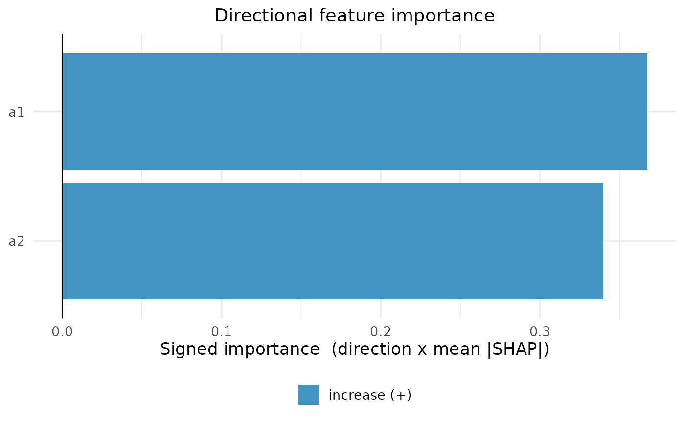

Plot Directional (Signed) Feature Importance for a Mossy Forest Object
Source:R/shapff_plot.R
plot_signed_importance.RdBar chart of signed importance = direction \(\times\) mean|SHAP|.
Magnitude is mean|SHAP| and the sign is the global effect direction taken from
the Spearman correlation between each feature's value and its SHAP value
(mean(signed SHAP) \(\approx 0\) because contributions cancel, so it
is unusable for direction). Bars to the right increase the average predicted outcome, and bars to the
left decrease it. These are associations in the fitted model, not causal
effects of changing a feature. Features whose direction is ambiguous (non monotone:
\(|\rho| < 0.1\)) are greyed.
For binary classification, "the outcome" means the probability of
levels(y)[1], the first level of the factor passed as y to
mf. Relevel y first if you want a different reference
class.
Usage
plot_signed_importance(object, ...)
# S3 method for class 'mossy_forest'
plot_signed_importance(
object,
top_n = 20L,
labels = NULL,
pos_color = "#4393c3",
neg_color = "#d6604d",
amb_color = "#bbbbbb",
pos_label = "increase",
neg_label = "decrease",
amb_label = "ambiguous",
main = "Directional feature importance",
...
)Arguments
- object
A
mossy_forestobject.- ...
Ignored.
- top_n
Show only the
top_nfeatures with the largest \(|\)signed importance\(|\). Default20L; useNULLorInfto plot every stable feature.- labels
Optional named character vector mapping feature names (as in
final_SHAP$feature_name) to readable labels for the axis, e.g. a gene symbol or indicator name lookup. Names not found are left unchanged. DefaultNULL(show the raw feature names).- pos_color
Bar color for positive direction. Default
"#4393c3".- neg_color
Bar color for negative direction. Default
"#d6604d".- amb_color
Bar color for ambiguous features. Default
"#bbbbbb".- pos_label
Legend text for the positive direction group. Default
"increase".- neg_label
Legend text for the negative direction group. Default
"decrease".- amb_label
Legend text for the ambiguous group. Default
"ambiguous".- main
Plot title. Default
"Directional feature importance".
Methods (by class)
plot_signed_importance(mossy_forest): Signed importance plot for amossy_forestobject.
Examples
# A small simulated regression problem with two modules of features
set.seed(1)
n <- 60
z <- rnorm(n)
X <- data.frame(a1 = z + rnorm(n, sd = 0.3), a2 = z + rnorm(n, sd = 0.3),
a3 = z + rnorm(n, sd = 0.3), b1 = rnorm(n), b2 = rnorm(n),
b3 = rnorm(n))
y <- z + rnorm(n, sd = 0.3)
membership <- c(a1 = "A", a2 = "A", a3 = "A", b1 = "B", b2 = "B", b3 = "B")
# The pure R backend needs no Python installation
fit <- mf(X, y, module_membership = membership,
screen_params = screen_control(min_ntree = 50),
select_params = select_control(n_reps = 10, min_ntree = 50),
final_ntree = 50, backend = "R", r_shap = "treeshap", verbose = 0, seed = 1)
plot_signed_importance(fit)
